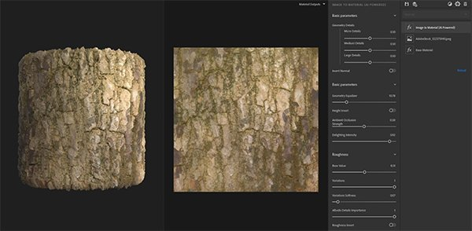
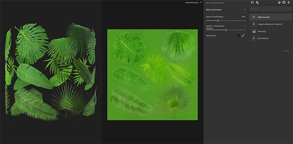
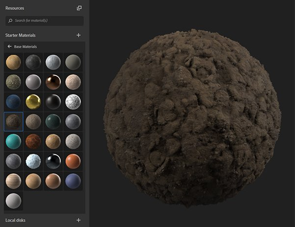
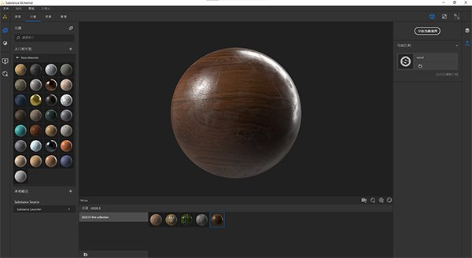

Substance Alchemist 2020.3 "Vermicelli" introduces new content and new workflows like the atlas creation from a single image. We also improved the thumbnail quality of our materials and have the interface localized in Chinese.
Release date: October 26, 2020

With the addition of two new filters, the atlas creation from a single image is simplified within Substance Alchemist.
Atlas generator: The filter generates automatically, from the base color, an opacity channel. It creates color diffusion too on the base color. It is recommended to use an image with a uniform background.
Atlas splitter: The filter allows you to isolate a specific element of your atlas and re-size it.

The thumbnails are now generated using the PBR Render node of Substance Designer with the new environment map Studio_06.
If the thumbnail is embedded in the Substance archive file (*.sbsar), Substance Alchemist will now read the thumbnail and not re-generate it.

A new parameter in the preferences is available to change the thumbnail quality to save time. By default, the quality is set to high.
Substance Alchemist is now localized in Chinese. You can change the interface language in the Preferences.

Warp: Warp your material to break patterns or make your material more vivid.
Surface relief: Add relief and variation on your material (replace the height modulation filter)
Invert: Invert the channel(s) of your choice
Scratches: Add scratches on your material. Useful on woods and metals for example.
Fingerprints: Add fingerprints on metals or shiny materials.
Discarded gums: Scatter old gums on a ground
Colorize: Tint a part or all your material
Color Variation: It allows you now to select how to segment your material. In addition to the base color, you can use the height, ambient occlusion, metallic, and roughness.
Replace color: Pick a color on your 2D view and select a new one.